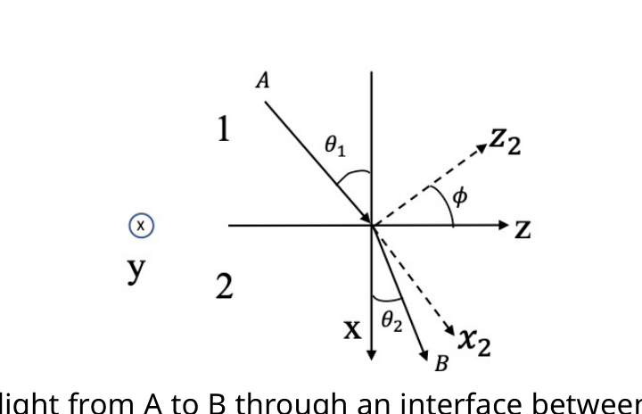
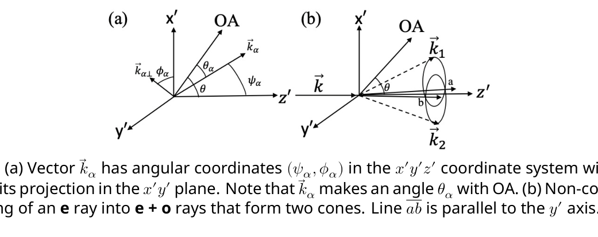
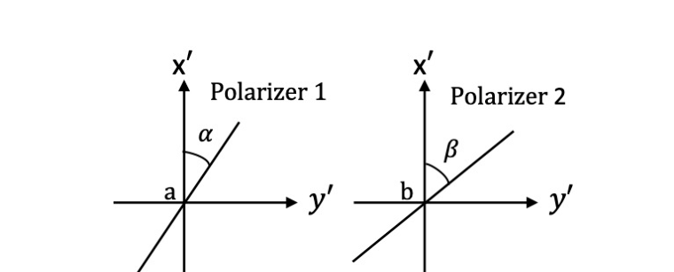

Ray tracing and generation of entangled light
Useful formula:
Introduction
Let represent the electric field, the magnetic field, the electric displacement, and the magnetic induction. We have , with being the polarization of the medium and being the permittivity of free space. Only nonmagnetic dielectric media are considered in this problem, hence , with being the permeability of free space. The energy density and energy flow density associated with the electromagnetic field are given by and Poynting’s vector , respectively.
In homogeneous dielectric media, a monochromatic plane wave of light can be described by its angular frequency , wave vector , , and . According to Maxwell’s equations, we have and . For such a wave, variations of and with position and time are given by sinusoidal functions of the phase .
Part A. Light propagation in isotropic dielectric media (1.0 points)
If the medium is isotropic, we have and , with and being the electric susceptibility and permittivity, respectively, of the medium. For a light wave of angular frequency in such a medium, a given phase will propagate in the direction with a velocity (called phase velocity) . Here is the speed of light in vacuum and is the refractive index of the medium. One can also use rays to represent a train of light waves. The propagation of a light ray is characterized by the direction and speed of the electromagnetic energy flow.
Consider a plane wave of light with angular frequency and wave vector in a homogeneous isotropic dielectric medium.
A.1 Express its phase velocity in terms of and . (0.4pt)
A.2 What is the refractive index of the dielectric medium for the wave? (0.2pt)
A.3 What are the direction and speed of its electromagnetic energy flow? (0.4pt)
Part B. Light propagation in uniaxial dielectric media (4.8 points)
We now assume the dielectric medium to be uniaxial, i.e, it is electrically anisotropic along a special direction fixed in the medium, called the optic axis, which we presently call it the direction. In such a case, the displacement and the electric field are related by , , and , where , , and axes are mutually orthogonal. Consequently, the phase velocity of a light wave is anisotropic and depends additionally on the directions of and . Let and , answer the followings questions: B.1, B.2, and B.3.
B.1 Suppose the wave vector of a monochromatic plane light wave is in the plane so that . At each angle , what directions of and are permissible for the light wave? Find all possible refractive indices and express the refractive indices in terms of , , and . Find the angle for which only one value is permitted for the refractive index. (1.5pt)
B.2 The polarization of a light wave, i.e., the direction of its electric field , can be either perpendicular (called an ordinary wave or ray) or parallel (called an extraordinary wave or ray) to the plane. For each of the light waves you found in B.1, specify its polarization as a unit vector and indicate whether it is an ordinary or extraordinary wave. Also compute , where is the angle between and ( is positive when going from to is clockwise). (0.8pt)
B.3 Extend the results in B.1 and B.2 to the general case when the angle between and the positive direction is still , but is not in the plane. Find all possible values of the refractive indices and the corresponding polarizations. (0.6pt)
In a uniaxial medium, the direction of of a light wave may differ from the direction of the light ray. The phase velocity of the wave is still given by with being the refractive index along , while the ray velocity is defined jointly by the direction and the rate of energy flow.
B.4 Following problems B.1-3, consider a light wave with . Let the angle between and the direction of the ray, , be ( is positive when going from to is clockwise). Find all possible values of , speed of the ray and . Using these results, express the ray index in terms of , , , , and . (0.8pt)
Consider the propagation of a light ray from A to B through an interface between an isotropic medium, labelled 1, and an anisotropic medium, labelled 2, as shown in Fig. 1. The interface coincides with the plane, while the plane of incidence is the plane. Let the angle of incidence be . The refractive index of medium 1 is , while the refractive indices of medium 2 for axes , , are , , and , respectively. Here axis coincides with axis. Fermat’s principle states that the propagation time for the path that the light ray goes from A to B is a minimum. For light with polarization parallel to plane and incident at the angle , Fermat’s principle leads to the following equation:
\bar{A}(\tan\theta_2)^2 + \bar{B}\tan\theta_2 + \bar{C} = 0 \tag{1}
B.5 Find , , and in terms of , , , and , where , , and . From Eq. (1), find corresponding to two special orientations: and . (1.1pt)

Fig. 1: Propagation of light from A to B through an interface between an isotropic medium 1 and an anisotropic medium 2.Part C. Entanglement of light (4.2 points)
In a nonlinear medium, the electric field is related to the polarization by . Here , , each can be any one of the three components , , , and are constants representing the second-order nonlinear susceptibility of the medium. Non-vanishing of implies that as a light wave travels through a nonlinear medium, it can split into two light waves.
Suppose that because are not all zero, the electric field in the medium is made up of a superposition of three plane waves of angular frequencies , , and , propagating with wave vectors , , and , respectively. Assume and .
C.1 Find all possible relations (known as the phase matching conditions) between these angular frequencies and wave vectors. Viewing light as composed of photons, what kinds of conservation laws do these conditions imply for the three photons involved? Write down equations expressing these conservation laws for the case that a photon with angular frequency and wave vector being split into two photons of angular frequencies and , propagating with wave vectors and , respectively. (0.8pt)
C.2 Consider a light wave in a uniaxial medium. Denote an ordinary ray as o and an extraordinary ray as e. There are 8 possible ways of splitting for the light wave: , , , , , , , and . Assume that the refractive indices and are both increasing functions of . Using the same notations for wave vectors as in problem C.1 and considering the case that , , and are collinear, indicate which of the 8 ways of splitting are not possible. (0.8pt)
Consider an incoming e ray traveling along direction with wave vector and in an uniaxial medium with refractive index . Suppose that, in a collinear splitting , the phase-matching conditions are realized with , , , and . Here subscripts 1 and 2 refer to e ray and o ray. , and all point in the direction. As shown in Fig. 2(a), the optic axis (OA) of the medium lies in the plane and makes an angle with the axis. Therefore, is a function of and , i.e., . For the same incoming e ray with wave vector and , suppose its non-collinear splitting into rays causes the latter two rays to separate but remain on two cones with , , as shown in Fig. 2(b). Note that in the collinear splitting, is already close to , and here is only slightly less than . In a plane perpendicular to , two circles on the cones for and intersect at points and with the line parallel to axis. As shown in Fig. 2(a), () makes an angle with the optic axis and has angular coordinates with being its projection in the plane. Each vector deviates from axis only slightly so that , and . Using approximations which agree with the component of to terms of the order and the angle to , one finds that must satisfy .
C.3 Let . Evaluate , , and in terms of , , , , and and the group velocities and for the o and e rays. Estimate the angle between the axis of the cone and , and also the angle of the cone in terms of , , and . (1.3pt)

Fig. 2: (a) Vector has angular coordinates in the coordinate system with being its projection in the plane. Note that makes an angle with OA. (b) Non-collinear splitting of an ray into rays that form two cones. Line is parallel to the axis.Problem C.3 shows that a photon may split into two photons which when passing through points and are polarized in perpendicular directions. These two photons are called entangled photon pair because if one photon that passes (called -photon) is polarized in a direction , the other that passes (called -photon) will be polarized in the direction , and if the -photon is polarized in , then the -photon will be polarized in . The entangled photon-pair state can be prepared experimentally. It is a superposition of the above two alternative states and can be expressed as . Here represents the state when -photon is polarized in direction and -photon is polarized in direction; similar meaning applies to . The coefficient can be viewed as the product of electric field amplitudes (expressed in suitable units) of - and -photons. As illustrated in Fig. 3, two linear polarizers 1 and 2 have transmission axes at angles and respectively with respect to . We may use them to perform coincidence measurement on the two photons that pass and . Let the probability of simultaneously finding two photons passing through polarizers 1 and 2 be . Alternatively, can also be regarded as being proportional to the product of intensities (after appropriate superpositions) of light passing through the two polarizers. Denote and by and respectively.

Fig. 3: Two linear polarizers 1 and 2 for coincidence measurement of photons that pass and .C.4 Consider the total electric field projected by linear polarizers. Find the probabilities , , , and . (0.8pt)
C.5 Assign when polarizer 1 with angle finds an -photon and when polarizer 1 with angle finds an -photon. Similarly, or is assigned when polarizer 2 with angle or finds a -photon. If denotes the average of , the quantity has important meaning. For classical theories of light, . This is a variant form of Bell’s inequality (the Clauser-Horne-Shimony-Holt inequality). Find the expression of and evaluate for the case , , , . Indicate if is consistent with the classical theories. (0.5pt)
Fonte: Testo (PDF) — p.1
Topic: Wave Optics, Modern-Quantum Physics, Electromagnetism Metodi: Snell’s Law, Vector Decomposition, Superposition Principle, Conservation Laws Competenze: Mathematical Modeling, Physical Reasoning Objects: Photon
Tracciamento dei raggi e generazione di luce intricata
**Figura utile: **
Introduzione
Il campo elettrico è rappresentato da , il campo magnetico è rappresentato da , il campo elettrico è rappresentato da e l’induzione magnetica è rappresentata da . Abbiamo , con che è la polarizzazione del mezzo e che è la permissività dello spazio libero. In questo problema vengono considerati solo i mezzi dielettrici non magnetici, quindi , con come permeabilità dello spazio libero. La densità di energia e la densità di flusso di energia associate al campo elettromagnetico sono indicate rispettivamente dal vettore e dal vettore di Poynting.
In media dielettrici omogenei, un’onda di luce monocromatica a piano può essere descritta con la sua frequenza angolare , il vettore d’onda , e . Secondo le equazioni di Maxwell, abbiamo e . Per tale onda, le variazioni di e con posizione e tempo sono indicate dalle funzioni sinusoidali della fase .
Parte A. Propagazione della luce nei media dielettrici isotropi (1,0 punti)
Se il mezzo è isotropo, abbiamo e , con e che sono rispettivamente la sensibilità elettrica e la permissività del mezzo. Per un’onda luminosa di frequenza angolare in tale mezzo, una data fase si propaga nella direzione con una velocità (chiamata * velocità di fase*) . Qui è la velocità della luce nel vuoto e è l’indice di rifrazione del mezzo. Si possono anche usare i raggi per rappresentare un tratto di onde di luce. La propagazione di un raggio luminoso è caratterizzata dalla direzione e dalla velocità del flusso di energia elettromagnetica.
Considera un’onda di luce a piana con frequenza angolare e vettore d’onda in un mezzo dielettrico isotropo omogeneo.
**A.1 ** Esprimere la sua velocità di fase in termini di e . (0.4pt)
A.2 Qual è l’indice di rifrazione del mezzo dielettrico per l’onda? (0.2pt)
A.3 Qual è la direzione e la velocità del suo flusso di energia elettromagnetica? (0.4pt)
Parte B. Propagazione della luce in media dielettrici uniaxiali (4,8 punti)
We now assume the dielectric medium to be uniaxial, i.e, it is electrically anisotropic along a special direction fixed in the medium, called the optic axis, which we presently call it the direction. In tal caso, il spostamento e il campo elettrico sono correlati da , e , dove gli assi , e sono reciprocamente ortogonali. Di conseguenza, la velocità di fase di un’onda luminosa è anisotropa e dipende ulteriormente dalle direzioni di e . Let and , answer the followings questions: B.1, B.2, and B.3.
B.1 Supponiamo che il vettore d’onda di un’onda di luce a piano monocromatico sia nel piano in modo che . In ciascun angolo , quali direzioni di e sono ammesse per l’onda luminosa? Trova tutti gli indici di rifrazione possibili ed esprimere gli indici di rifrazione in termini di , e . Trova l’angolo per il quale è consentito un solo valore per l’indice di rifrazione. (1.5pt)
B.2 La polarizzazione di un’onda luminosa, cioè la direzione del suo campo elettrico , può essere perpendicolare (chiamata onda ordinaria o raggio *) o parallela (chiamata onda extraordinaria o raggio **) al piano . Per ciascuna delle onde di luce che si trovano in B.1, specificare la sua polarizzazione come vettore unitario e indicare se si tratta di un’onda ordinaria o straordinaria. Calcolare anche , dove è l’angolo tra e ( è positivo quando si passa da a è nel senso orario). (0.8pt)
B.3 Estendere i risultati di B.1 e B.2 al caso generale quando l’angolo tra e la direzione positiva è ancora , ma non è nel piano . Trova tutti i valori possibili degli indici di rifrazione e delle polarizzazioni corrispondenti. (0.6pt)
In un mezzo uniaxiale, la direzione di di un’onda luminosa può differire dalla direzione del raggio luminoso. La velocità di fase dell’onda è ancora data da con essendo l’indice di rifrazione lungo , mentre la velocità del raggio è definita congiuntamente dalla direzione e dal tasso di flusso di energia.
** B.4 ** Dopo i problemi ** B.1-3 **, si deve considerare un’onda luminosa con . L’angolo tra e la direzione del raggio, , sia ( è positivo quando si passa da a in senso orario). Trova tutti i valori possibili di , velocità del raggio e . Con questi risultati, esprimere l’indice di raggi in termini di , , , e . (0.8pt)
Si consideri la propagazione di un raggio luminoso da A a B attraverso un’interfaccia tra un mezzo isotropo, etichettato 1, e un mezzo anisotropo, etichettato 2, come mostrato nella figura. 1. L’interfaccia coincide con il piano , mentre il piano di incidenza è il piano . L’ angolo di incidenza deve essere . L’indice di rifrazione del mezzo 1 è , mentre gli indici di rifrazione del mezzo 2 per gli assi , , sono , e , rispettivamente. Qui l’asse coincide con l’asse . Il principio di Fermat afferma che il tempo di propagazione per il percorso che il raggio di luce va da A a B è minimo. Per la luce con polarizzazione parallela al piano e incidente all’angolo , il principio di Fermat porta alla seguente equazione:
\bar{A}(\tan\theta_2)^2 + \bar{B}\tan\theta_2 + \bar{C} = 0 \tag{1}
B.5 Trova , e in termini di , , e , dove , e . - Da Eq. (1) trovare le corrispondenti a due orientamenti speciali: e . (1.1pt)
Fig. 1: Propagazione della luce da A a B attraverso un’interfaccia tra un mezzo isotropo 1 e un mezzo anisotropo 2.
Parte C. Intraposizione della luce (4,2 punti)
In un mezzo non lineare, il campo elettrico è correlato alla polarizzazione da . Qui , , possono essere ognuna delle tre componenti , , e , costanti che rappresentano la sensibilità non lineare di secondo ordine del mezzo. La non scomparsa di implica che, mentre un’onda luminosa attraversa un mezzo non lineare, può dividersi in due onde luminose.
Supponiamo che, poiché non sono tutti zero, il campo elettrico nel mezzo sia costituito da una sovrapposizione di tre onde piane di frequenze angolari , e , che si propagano con vettori d’onda , e , rispettivamente. Supponiamo e .
C.1 Trovare tutte le possibili relazioni (conosciute come * condizioni di abbinamento di fase*) tra queste frequenze angolari e vettori d’onda. Considerando la luce come composta da fotoni, quali tipi di leggi di conservazione queste condizioni implicano per i tre fotoni coinvolti? Scrivere le equazioni che esprimono queste leggi di conservazione nel caso in cui un fotone con frequenza angolare e vettore d’onda si divida in due fotoni di frequenze angolari e , che si propaga con vettori d’onda e , rispettivamente. (0.8pt)
**C.2 ** Considera un’onda di luce in un mezzo uniaxiale. Indicare un raggio ordinario come o e un raggio straordinario come e. Esistono otto possibili modi di divisione per l’onda luminosa: , , , , , , e . Supponiamo che gli indici di rifrazione e siano entrambe funzioni di aumento di . Utilizzando le stesse notazioni per i vettori d’onda come nel problema C.1 e considerando che , e sono collineari, indicare quale dei 8 modi di divisione non è possibile. (0.8pt)
Considera un raggio e che viaggia lungo la direzione con il vettore d’onda e in un mezzo uniaxiale con indice di rifrazione . Supponiamo che, in una divisione collineare , le condizioni di abbinamento di fase siano realizzate con , , e . Qui i sottoscrizioni 1 e 2 si riferiscono al raggio e e al raggio o. , e tutti punti nella direzione . Come mostrato nella figura. 2(a), l’asse ottico (OA) del mezzo si trova nel piano e fa un angolo con l’asse . Pertanto, è una funzione di e , cioè . Per lo stesso raggio e entrante con vettore d’onda e , supponiamo che la sua divisione non collineare in raggi faccia separare questi ultimi due raggi ma rimanga su due coni con , , come mostrato alla figura. 2(b). Si noti che nella divisione collineare è già vicino a , e qui è solo leggermente inferiore a . In un piano perpendicolare a , due cerchi sui coni per e si intersecano nei punti e con la linea parallela all’asse . Come mostrato nella figura. 2(a), () fa un angolo con l’asse ottica e ha coordinate angolari con che è la sua proiezione nel piano . Ogni vettore si allontana solo leggermente dall’asse in modo che , e . Usando approssimazioni che concordano con la componente di in termini dell’ordine e l’angolo a , si constata che deve soddisfare .
C.3 ** Lasciate . Valutare , e in termini di , , , , e e le velocità di gruppo e per i raggi ** o ** e ** e. Calcolare l’angolo tra l’asse del cono e , nonché l’angolo del cono in termini di , , e . (1.3pt)
Fig. 2: a) Il vettore ha coordinate angolari nel sistema di coordinate con la sua proiezione nel piano . Si noti che fa un angolo con OA. b) Divisione non collineare di un raggio in raggi che formano due coni. La linea è parallela all’asse .
Il problema C.3 mostra che un fotone può dividersi in due fotoni che, passando attraverso i punti e , sono polarizzati in direzioni perpendicolari. Questi due fotoni sono chiamati parete di fotoni intrappolati perché se un fotone che passa (chiamato -fotone) è polarizzato in una direzione , l’altro che passa (chiamato -fotone) sarà polarizzato nella direzione , e se il -fotone è polarizzato in , allora il -fotone sarà polarizzato in . Lo stato di coppia di fotoni intrecciati può essere preparato sperimentalmente. Si tratta di una sovrapposizione dei due stati alternativi di cui sopra e può essere espressa come . Qui rappresenta lo stato in cui -fotone è polarizzato in direzione e -fotone è polarizzato in direzione ; un significato simile si applica a . Il coefficiente può essere considerato il prodotto delle amplitudini del campo elettrico (espresse in unità appropriate) dei fotoni - e . Come illustrato in Figura 1. 3, due polarizzatori lineari 1 e 2 hanno assi di trasmissione rispettivamente a angoli e rispetto a . Possiamo usarle per eseguire la misurazione della coincidenza sui due fotoni che passano e . La probabilità di trovare contemporaneamente due fotoni che passano attraverso i polarizzatori 1 e 2 sia . In alternativa, può essere considerato anche proporzionale al prodotto delle intensità (dopo le superposizioni appropriate) della luce che attraversa i due polarizzatori. Denotare e rispettivamente con e .
Fig. 3: Due polarizzatori lineari 1 e 2 per la misurazione della coincidenza dei fotoni che passano e .
**C.4 ** Considera il campo elettrico totale proiettato dai polarizzatori lineari. Trova le probabilità , , e . (0.8pt)
C.5 Assegna quando il polarizzatore 1 con angolo trova un -fotone e quando il polarizzatore 1 con angolo trova un -fotone. Allo stesso modo, o viene assegnato quando il polarizzatore 2 con angolo o trova un fotone . Se indica la media di , la quantità ha un significato importante. Per le teorie classiche della luce, . Questa è una variante della disuguaglianza di Bell (la disuguaglianza Clauser-Horne-Shimony-Holt). Trova l’espressione di e valuta per il caso , , , . Indicare se è coerente con le teorie classiche. (0.5pt)
Fonte: Testo (PDF) — p.1
Topic: Wave Optics, Modern-Quantum Physics, Electromagnetism Metodi: Snell’s Law, Vector Decomposition, Superposition Principle, Conservation Laws Competenze: Mathematical Modeling, Physical Reasoning Objects: Photon